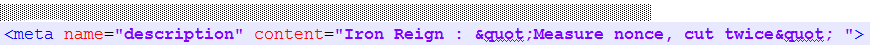
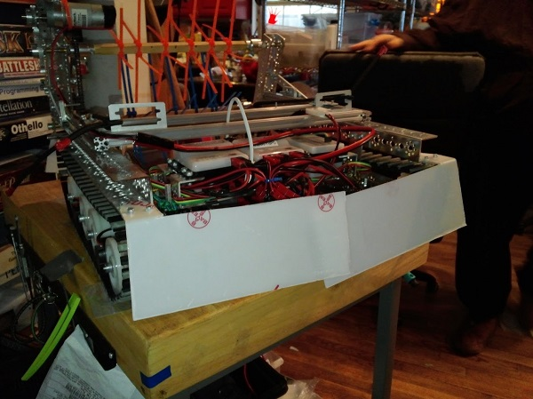
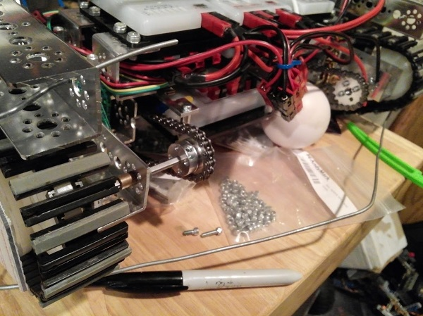

"Measure nonce, cut twice," is Iron Reign's unofficial slogan, as hidden in our html.
We especially learned the error of cutting hastily today, as we errored in the production of our bumpers.
Evan and I spent multiple practices on working on the front and back bumpers. We easily took ten hours cutting them into their perfect shape. However, after we had placed the bumpers, we found a very unfortunate error; our perfect, hand-crafted bumpers both set us outside the size limit, interfering with our treads and motors.

In summary, we should remember to measure before we cut. Before making any apparatus in the future, we need to make sure to measure and calculate the size of what we are placing on the robot. This will both ensure our design works as expected, and our valuable time isn't wasted.